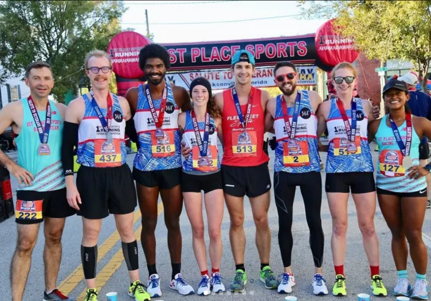

ІСТОРІЯ 361
Історія бренду 361
Цікава подорож про невеликий бізнес, створений у 2003 році з виробництва простого спортивного взуття в Китаї, і його шлях стати переможцем у категорії кросівок ISPO у 2018 році та відомим брендом у всьому світі.
З самого початку вони намагалися представити все на 1 градус поза можливим, тому це називається 361 градус. Однак вони почали з виробництва взуття та простих спортивних речей, але тепер вони головним чином займаються бренд-менеджментом, дослідженнями, розробкою, дизайном, виробництвом і розповсюдженням у Китаї та по всьому світу. І тепер вони мають понад 7 тисяч відділень, які виробляють різноманітний спортивний одяг, щоб задовольнити всі ваші потреби за допомогою найвищих технологій. Його повний портфель продуктів включає взуття, одяг, аксесуари під брендом 361° Core, брендом 361° kids і ONE WAY, автентичним фінським брендом, який зосереджується на більш функціональних і більш спеціалізованих продуктах для активного відпочинку.
Вони виявилися поза очікуваннями, і незабаром після того, як вони стали одним із найпопулярніших брендів у Китаї, вони налагодили контакти з Європою, США, Бразилією та Тайванем. Завдяки підтримці послів, клієнтів і наполегливій роботі персоналу, який був з ними на всіх етапах подорожі, вони поширювали свою продукцію через ексклюзивних дистриб’юторів першого рівня та авторизованих роздрібних торговців другого рівня в понад 20 країнах, включаючи Європа, США, Бразилія та Близький Схід.
361 градус в Європі
Після багатьох років представлення спортивного взуття та одягу в Китаї та Азії, дотримуючись свого девізу, вони вирішили створити компанію в Європі з початковою метою створити вихід у світ бігу. Оскільки у світі вже існує багато брендів кросівок для бігу, вони не прагнули додати ще одну марку взуття, тому підготувалися за допомогою чесної історії та найвищої якості.
З самого початку вони намагалися представити все на 1 градус поза можливим, тому це називається 361 градус. Однак вони почали з виробництва взуття та простих спортивних речей, але тепер вони головним чином займаються бренд-менеджментом, дослідженнями, розробкою, дизайном, виробництвом і розповсюдженням у Китаї та по всьому світу. І тепер вони мають понад 7 тисяч відділень, які виробляють різноманітний спортивний одяг, щоб задовольнити всі ваші потреби за допомогою найвищих технологій. Його повний портфель продуктів включає взуття, одяг, аксесуари під брендом 361° Core, брендом 361° kids і ONE WAY, автентичним фінським брендом, який зосереджується на більш функціональних і більш спеціалізованих продуктах для активного відпочинку.
Вони виявилися поза очікуваннями, і незабаром після того, як вони стали одним із найпопулярніших брендів у Китаї, вони налагодили контакти з Європою, США, Бразилією та Тайванем. Завдяки підтримці послів, клієнтів і наполегливій роботі персоналу, який був з ними на всіх етапах подорожі, вони поширювали свою продукцію через ексклюзивних дистриб’юторів першого рівня та авторизованих роздрібних торговців другого рівня в понад 20 країнах, включаючи Європа, США, Бразилія та Близький Схід.
361 градус в США
Зараз у США є один додатковий ступінь, і все залежить від відданості та відданості підтримці спортсменів усіх рівнів і здібностей. Лише 10 років знадобилося, щоб у 2004 році сімейна компанія стала головним спонсором Олімпійських ігор у Ріо в 2016 році.
Американські амбасадори 361 градуса: бігунка на довгі дистанції Сара Крауч та олімпійка Кеті Заферес обрали бренди взуття та спортивного одягу 361 градусів.
І величезний прогрес для них, коли фантастичний форвард «Орландо» Аарон Гордон зробив нове спонсорство з 361 градусами, і тепер у нього є окремий бренд баскетбольного взуття під виробництвом 361 градусів.
А в 2011 році Кевін Лав підписав шестирічну угоду про кросівки з баскетбольними кросівками на 361 градус.
У Китаї Джиммер Фредетт, колишній гравець НБА, представив своє власне фірмове взуття під китайським брендом 361, і вони наче вогонь.
361 градус в Азії та на Близькому Сході
Тепер, коли вони розповсюджують по всьому світу, вони не забули про своїх сусідів, азіатських клієнтів. У Малайзії, Дубаї, Туреччині, Філіппінах, Тайвані, Ірані та інших країнах ентузіасти зможуть купувати взуття та одяг у місцевих спортивних магазинах або доступних онлайн-магазинах.
Нові технології новий бренд
Вони тут не просто для того, щоб додати ще один варіант до вашого улюбленого місцевого спортивного магазину, вони тут, щоб вийти за рамки. Їхня технологія взуття складається з 3 частин: устілки, проміжної підошви та Eva. QU!KКомфортний шар для устілки, їх ексклюзивний QU! KFOAM для середньої підошви та стійкості для Єви.
QU! Технологія середньої підошви KFOAM: ексклюзивна технологія середньої підошви перетворює енергію на чуйну амортизацію. Три шари амортизації утворюють гнучку та чутливу систему QDP.system.
Існує понад 14 різних технологій, які на 361 градус використовують їх у своєму взутті.
Технологія одягу
Основна технологія для спортивного одягу: БЕЗПЛЯМНА Антибактеріальна технологія Microban, ПИЛОЗАХИСТКА Функція захисту від піску, АНТИ-УФ, захист від ультрафіолету, проникнення повітря забезпечує прохолоду та сухість тіла.
Найважливіша подія на 361 градус
Крім того, щоб підтримати потреби спортсменів у всьому світі, вони стають частиною деяких спортивних заходів, щоб більше заохочувати людей і використовувати настрої:
Haspa Marathon Hamburg : у 2019 році Haspa Marathon Hamburg проходить разом із 361°. Найбільший у Німеччині весняний марафон у Гамбурзі стане новим офіційним партнером спортивного бренду 361°. «Щороку понад 30 000 бігунів беруть участь у цій дивовижній події, і ми раді бути партнерами цього веселого вікенду у 2019 році». Сказав менеджер 361 градус
361 Retailers Cup : 361 Degrees кидає виклик спеціалізованим продавцям, оголошуючи «The 361 Cup», першу офіційну лігу роздрібних перегонів.

Офіційна підтримка в Олімпійських і Паралімпійських іграх у Ріо 2016 : одна з перших учасниць 361 градуса, представлених світу.
Офіційний партнер Азійських ігор у Джакарті 2018: втретє спонсорує Ігри на 361° після версії 2010 року в Гуанчжоу та версії 2014 року в Інчхоні
361° стане офіційним титульним спонсором Чемпіонату світу з керлінгу серед чоловіків 2018 у Лас-Вегасі: усі учасники та тренери одягли форму 361°
361 Degrees стає офіційним партнером Азійських ігор у Ханчжоу 2022: після підписання угоди вони стали офіційним партнером Азійських ігор у Ханчжоу з виробництва спортивного одягу. «Вони мають багату історію підтримки Азійських ігор. Ми сподіваємося, що вони зможуть інтегрувати концепцію «зеленого», «інтелектуального», «ощадливого» та «цивілізованого» в дизайн», – Чень Вейцян, заступник генерального секретаря Організаційного комітету Азійських ігор Ханчжоу (HAGOC) і віце-мер міста Ханчжоу, сказав на конференції підписання. Крім них, інші бренди: Geely, Alibaba, Alipay, China Telecom, China Mobile, ICBC і Zheijiang Loong Airlines.